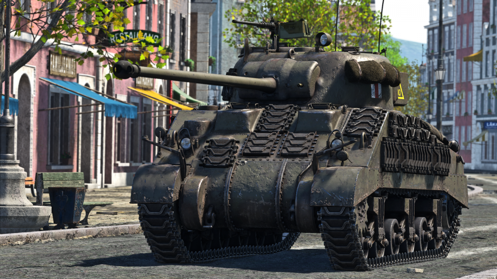

M4 Sherman
![[Aquí va la imagen del Sherman]](./images/M4 Sherman.png)
El M4 Sherman, oficialmente Medium Tank, M4, fue el carro de combate medio más ampliamente utilizado por los Estados Unidos y los Aliados Occidentales en la Segunda Guerra Mundial. Fue nombrado "Sherman" por los británicos en honor del general de la Guerra de Secesión William Tecumseh Sherman y demostró ser fiable, relativamente barato de producir y estuvo disponible en grandes cantidades. Decenas de miles fueron distribuidos a través de la Ley de Préstamo y Arriendo a la Commonwealth Británica y la Unión Soviética.
Historia
El M4 evolucionó a partir del M3 Medium Tank, llamado por los británicos Lee o Grant y que era un carro medio que tenía su armamento principal en una montura lateral de recorrido limitado en el propio casco. El M4 retuvo gran parte del diseño mecánico de su antecesor, pero montó el cañón principal de 75 mm en una torreta central de giro horizontal completo. Una característica del Sherman era que contaba con un giroestabilizador vertical en el cañón que no era lo suficientemente preciso como para permitirle disparar en movimiento, pero ayudaba a mantener la retícula en el objetivo, de modo que cuando el vehículo se detenía para disparar el cañón apuntaba más o menos en la dirección correcta y agilizaba el disparo.
primera batalla
Cuando el M4 entró en combate por primera vez en el Norte de África con el Ejército Británico en la Segunda Batalla de El Alamein a finales de 1942, aumentó la ventaja de la fuerza blindada Aliada sobre la del Eje y fue superior a los diseños de carros alemanes e italianos más ligeros.[5] Por esta razón, el Ejército de los Estados Unidos creía que el M4 sería adecuado para ganar la guerra, ejerciendo inicialmente relativamente poca presión para un mayor desarrollo del carro de combate. Las restricciones logísticas y de transporte, como las limitaciones impuestas por las carreteras, los puertos y los puentes, también complicaron la introducción de un carro más capaz pero más pesado.[6] También entraron en servicio generalizado en los ejércitos Aliados batallones destructores de carros con vehículos construidos a partir del casco y el chasis del M4, pero con torretas abiertas y cañones de alta velocidad más potentes. Incluso en 1944, la mayoría de los Shermans M4 conservaban su cañón de 75 mm de doble propósito.[7] Para entonces, el M4 era inferior en potencia de fuego y blindaje a un número creciente de carros pesados alemanes, pero fue capaz de combatir con la ayuda de una superioridad numérica considerable, una mayor fiabilidad mecánica, un mejor apoyo logístico y el apoyo de un número creciente de cazabombarderos y piezas de artillería.[8] A partir de 1844, gran parte de los Sherman fueron producidos con un cañón más largo y capaz, el Cañón M1 de 76 mm, o reacondicionados por los británicos con un cañón Ordnance QF de 17 libras de calibre 76,2 mm creando el conocido como Sherman Firefly.  Este tanque era una modificación británica del tanque estadounidense M4 Sherman, equipado con un poderoso cañón antitanque de 17 libras (76.2 mm). Este cañón era tan efectivo que permitió al Firefly "iluminar" a sus enemigos en combate, de ahí el apodo "Firefly"